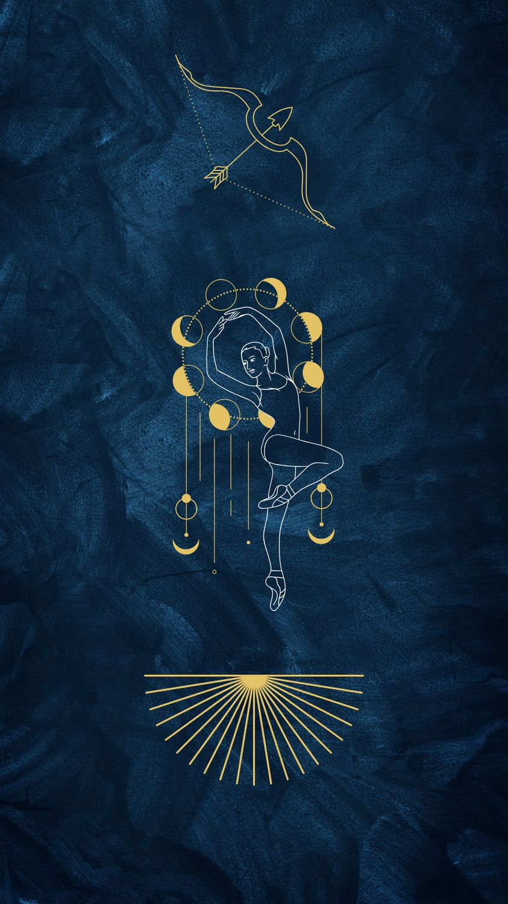

Yay
22 Kasım – 21 Aralık · Element: Ateş · Yönetici: Jüpiter

Genel Profil
Yay; keşif, özgürlük ve büyüme arzusudur. Ufku geniştir, öğrenmeyi sever.
Dağılma ve “hemen sıkılma” riski vardır; hedefi netleştirince hızlanır.
Güçlü Yönler
- İyimserlik
- Keşif ruhu
- Doğrudanlık
- Öğrenme isteği
Zorlayıcı Yönler
- Sözünü filtresiz söyleme
- Bağlanmakta zorlanma
- Dağınık plan
- Sabırsızlık
Aşk
Özgür alan ister; birlikte macera ilişkiyi canlı tutar.
Kariyer
Turizm, eğitim, dış ticaret, medya, spor ve danışmanlık.
İpucu
Bugün yeni bir şey öğren: 10 dakikalık mini bir araştırma yap.